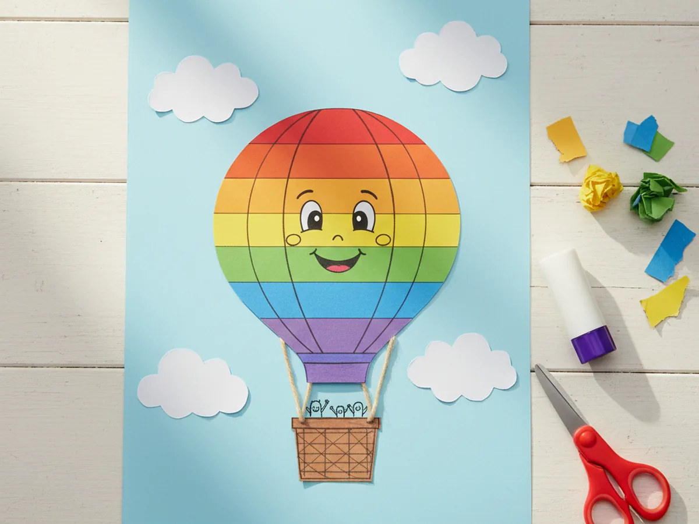
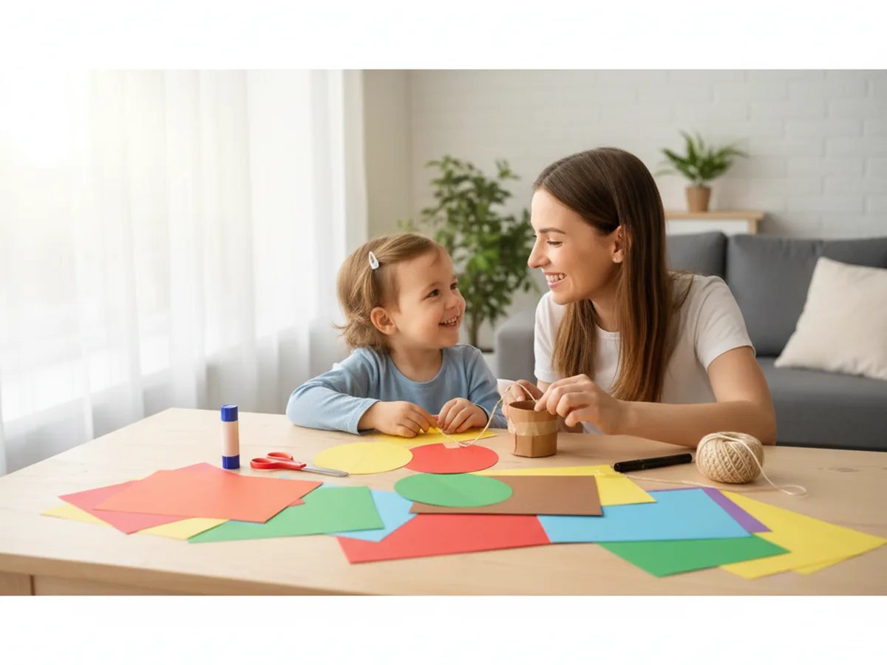
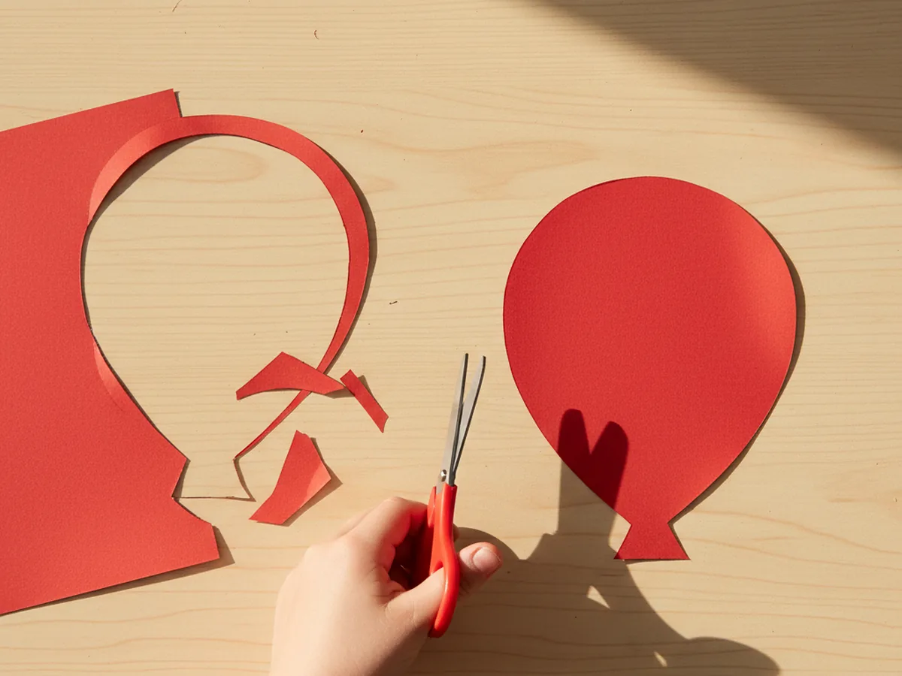
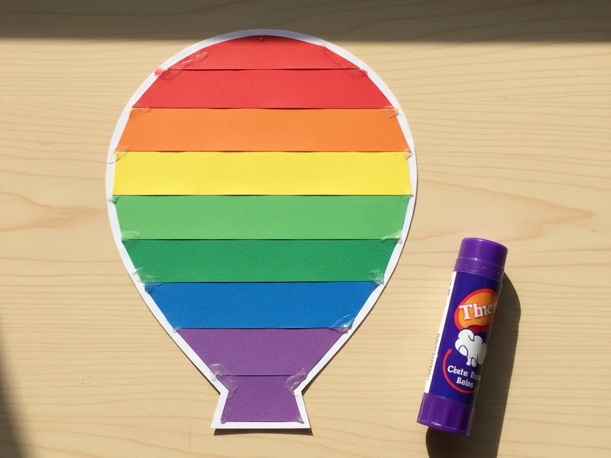
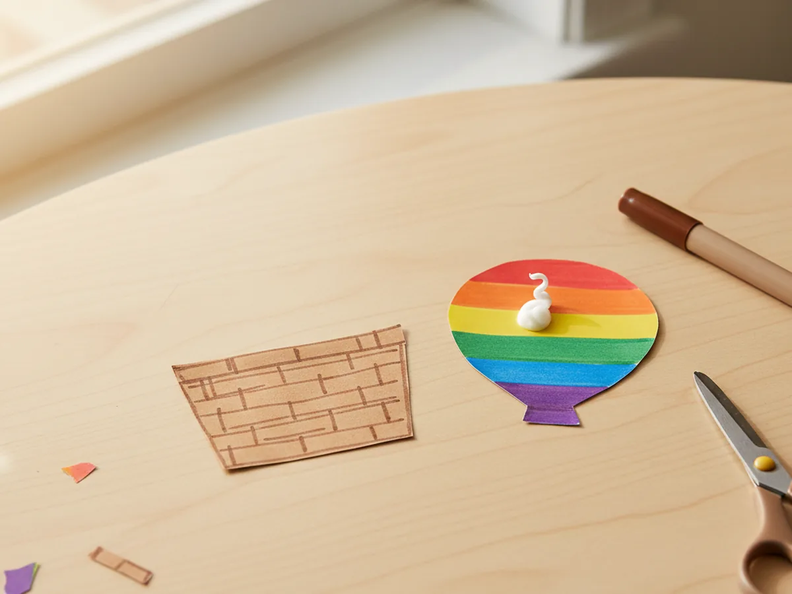
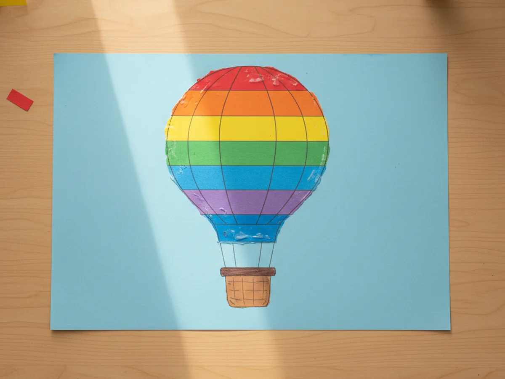
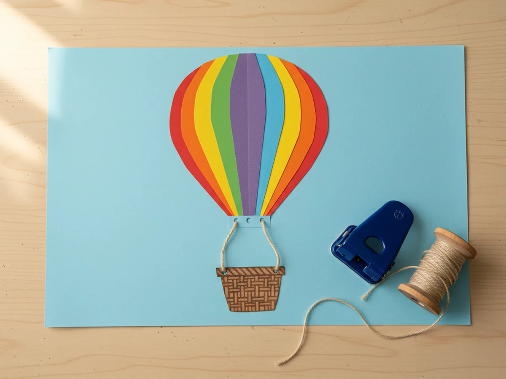
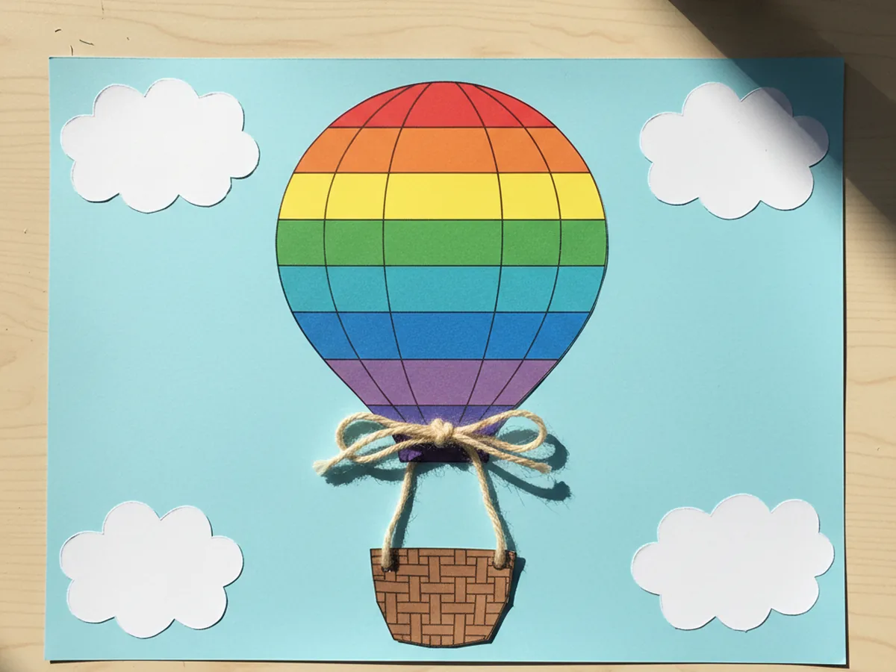
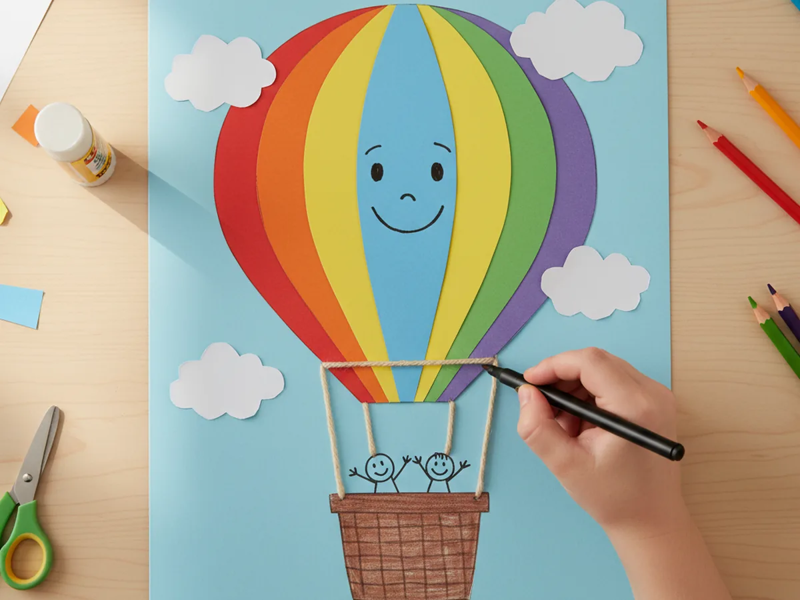
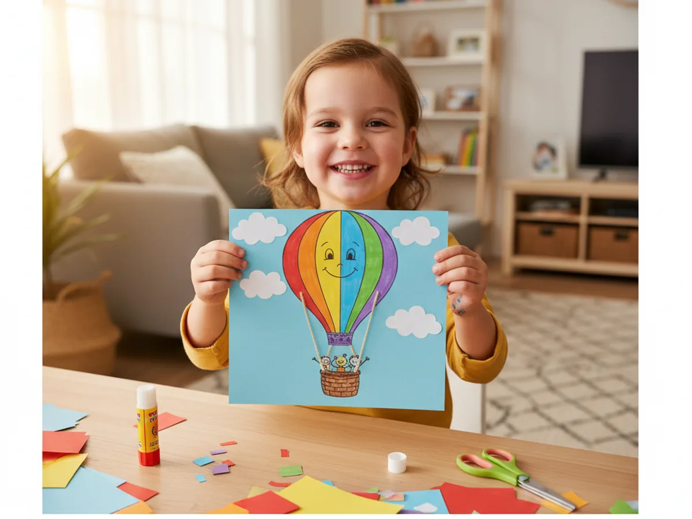

This cheerful hot air balloon paper craft is the kind of project that makes a regular afternoon feel a little bit magical. You and your child cut a big rounded balloon shape, decorate it with bright rainbow stripes, add a tiny brown paper basket, and connect them with real yarn ropes. The result looks like a little hot air balloon floating across a sunny blue sky, and your child will not stop showing it off. 🌈
It is a calm, low-mess activity for ages 3 and up that fits nicely on a normal kitchen table. Toddlers can press the colorful paper strips onto the balloon, while older kids handle the cutting and the fun part of threading the yarn ropes. Either way, this hot air balloon paper craft turns out bright, sweet, and full of personality, and it doubles as the cutest little wall decoration in your child's bedroom or playroom.
Why Kids Love This Craft
Hot air balloons feel like something out of a storybook to a young child. The big round balloon, the tiny basket, and the idea of floating high above the trees fires up their imagination almost immediately. As soon as the rainbow stripes go onto the balloon, most kids start telling stories about where their balloon is going, who is riding inside, and what they will see from up in the clouds. It turns a quiet craft session into a sweet little daydream.
This hot air balloon craft for kids is also gently good for them. Cutting the rounded balloon shape gives them real scissor practice, and lining up the colorful paper stripes builds early pattern and color recognition. Threading the yarn ropes through small holes is a wonderful fine motor moment for slightly older children, and even toddlers love pressing the cotton-soft clouds into place. None of it feels like work, which is the whole point.
The decorating step is where the craft really comes alive. Some kids draw a tiny smiling face on the balloon. Others tuck a little waving stick-figure passenger into the basket. A few will add hearts, stars, or even a tiny pet riding along. There is no wrong way to finish an easy hot air balloon paper craft, and that creative freedom is exactly what makes children feel proud of what they made together with you. 💛

What You'll Need
Here is everything you need for this hot air balloon paper craft, and most of it is already sitting in your craft drawer.
- Crayola Construction Paper, 240 ct, the rainbow assortment covers every stripe, the basket, and the clouds in one pack
- Astrobrights Cardstock, 65 lb Bright Assortment, a sturdier sheet works perfectly as the balloon base and the light blue sky background
- Elmer's Disappearing Purple Glue Sticks, 4 pack, easy for little hands and dries clear so no white smudges show on the bright paper
- Fiskars Blunt-Tip Kids Scissors, safe for ages 4 and up and just right for the soft rounded balloon shape
- Caron Simply Soft Yarn Assortment, a small bundle of colorful yarn is all you need to make the ropes between the balloon and the basket
- Single Hole Punch with Soft Grip Handle, makes neat little holes for threading the yarn ropes without any tearing
- Sharpie Fine Point Markers, Black, perfect for tiny smiling faces, sun rays, and little passenger details
- Crayola Broad Line Markers, optional for adding extra patterns, hearts, or pretty designs on the balloon
- A pencil, optional for sketching the balloon shape before cutting
Step-by-Step Instructions
Take this one calm step at a time and you will have a finished hot air balloon in about half an hour. Let your child help with every part, even if it is just pressing the paper stripes down.
Step 1: Cut the Balloon Shape
Start by cutting one big rounded balloon shape from cardstock, about 7 inches tall and 6 inches wide. Think of a soft upside-down teardrop or a chunky lightbulb shape with a flat bottom. Use a pencil to lightly sketch the outline first if your child is doing the cutting. Slightly imperfect curves actually look charming and give the hot air balloon paper craft a real handmade feel. Pick any color of cardstock as the base, since you will be covering most of it with rainbow stripes in the next step.

Step 2: Add the Rainbow Stripes
Now for the cheerful part. Cut long strips of construction paper in red, orange, yellow, green, blue, and purple, each about three quarters of an inch wide. Glue them across the balloon in rainbow order from top to bottom, slightly curving each strip to follow the round shape. Once all the stripes are pressed flat, flip the balloon over and trim the extra paper sticking past the edges. This turns your plain cardstock into a bright, colorful balloon body that already looks like a real hot air balloon paper craft.

Step 3: Cut the Basket
Cut a small rectangle from brown construction paper, about 2.5 inches wide and 2 inches tall. This is the little basket that hangs under the balloon. To make it look woven like a real basket, use a pencil or a brown marker to draw a few light horizontal lines across the rectangle and one or two vertical lines down the middle. Keep the lines loose and uneven, since real wicker baskets are never perfectly straight. Set the basket aside for now.

Step 4: Glue the Balloon and Basket to the Sky
Grab a sheet of light blue cardstock for the sky background. Place the rainbow-striped balloon near the top center, leaving enough room above for clouds and enough room below for the basket and ropes. Glue the balloon down and press it flat. Then position the brown basket about 2 inches below the bottom of the balloon, centered underneath, and glue it down too. The gap between them is where your hot air balloon craft will get its yarn ropes in the next step.

Step 5: Punch the Holes and Add the Yarn Ropes
Use a single hole punch to make two small holes at the bottom edge of the balloon, spaced about an inch apart. Then punch two more holes at the top edge of the basket, lined up under the balloon holes. Cut two short pieces of yarn, each about 3 inches long. Thread one end of each yarn piece through a balloon hole and the other end through a basket hole, then tie a tiny knot at each end on the back so the ropes stay in place. Finish with a small dab of glue behind each knot to keep everything flat.

Step 6: Add the Fluffy Clouds
Cut three or four small rounded cloud shapes from white construction paper, each about 2 inches wide with a soft bumpy edge. Glue them around the balloon on the blue sky background, leaving the balloon clearly in the center as the star of the scene. You can place one cloud near the top, one to the left, and one in the bottom corner. These soft white shapes instantly turn the page into a proper sky and make the whole hot air balloon paper craft feel like a peaceful summer day. ☁️

Step 7: Add the Final Details
Now hand over the black marker and let your child go wild with the finishing touches. They might draw a cheerful smiling face right in the middle of the balloon, two tiny waving passengers peeking out of the basket, or a few small sun rays in the upper corner of the sky. A few birds in the distance also look adorable. Once the marker is dry, your hot air balloon paper craft is ready to be displayed proudly on the fridge, in a frame, or taped right onto your child's bedroom wall. ✨


Variations to Try
3D Paper Cup Balloon: Skip the flat basket and use a small paper cup instead. Punch four holes around the rim of the cup, attach four yarn ropes, and tape them onto the back of the paper balloon. Hang the finished craft from the ceiling so it actually floats in your child's room.
Polka Dot Balloon: Swap the rainbow stripes for a balloon covered in colorful paper dots punched from construction paper scraps. This version is wonderful for toddlers who are not quite ready to cut long stripes but love peeling and sticking little circles.
Family Photo Basket: Make the basket a bit larger, around 3 inches tall, and glue a small cut-out photo of your family inside it. The hot air balloon now feels like your whole family is going on a sky adventure together, which makes the finished craft a lovely keepsake.
Final Thoughts
A simple hot air balloon paper craft is one of those projects that proves the smallest things can spark the biggest stories. A few colorful paper stripes, a brown rectangle, and a couple of yarn ropes turn into a tiny sky adventure that your child will want to hang on the wall and talk about for days. The real magic is the moment they hold up their finished balloon and tell you exactly where it is flying to. That little burst of imagination is the whole reason we craft together. Happy crafting, mama.
More Crafts You'll Love
If your family enjoyed making this little hot air balloon, here are two more bright and breezy crafts to try next.